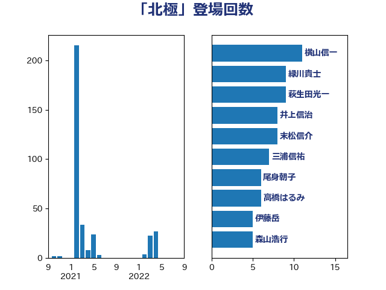

単語「北極」

| 横山信一 | 公明党 | 11 回 |
| 緑川貴士 | 立憲民主党 | 9 回 |
| 萩生田光一 | 自由民主党 | 9 回 |
| 井上信治 | 自由民主党 | 8 回 |
| 末松信介 | 自由民主党 | 8 回 |
| 三浦信祐 | 公明党 | 7 回 |
| 尾身朝子 | 自由民主党 | 6 回 |
| 高橋はるみ | 自由民主党 | 6 回 |
| 伊藤岳 | 日本共産党 | 5 回 |
| 森山浩行 | 立憲民主党 | 5 回 |
| 上野通子 | 自由民主党 | 4 回 |
| 田島麻衣子 | 立憲民主党 | 4 回 |
| 高良鉄美 | 無所属 | 4 回 |
| 柳ヶ瀬裕文 | 日本維新の会 | 3 回 |
| 中西祐介 | 自由民主党 | 2 回 |
| 丹羽秀樹 | 自由民主党 | 2 回 |
| 伊東信久 | 日本維新の会 | 2 回 |
| 川田龍平 | 立憲民主党 | 2 回 |
| 松木けんこう | 立憲民主党 | 2 回 |
| 林芳正 | 自由民主党 | 2 回 |
| 池田佳隆 | 自由民主党 | 2 回 |
| 磯崎仁彦 | 自由民主党 | 2 回 |
| 鈴木敦 | 国民民主党 | 2 回 |
| 阿部弘樹 | 日本維新の会 | 2 回 |
| 麻生太郎 | 自由民主党 | 2 回 |
| 上田清司 | 国民民主党 | 1 回 |
| 室井邦彦 | 日本維新の会 | 1 回 |
| 梶山弘志 | 自由民主党 | 1 回 |
| 横沢高徳 | 立憲民主党 | 1 回 |
| 浜口誠 | 国民民主党 | 1 回 |
| 鶴保庸介 | 自由民主党 | 1 回 |